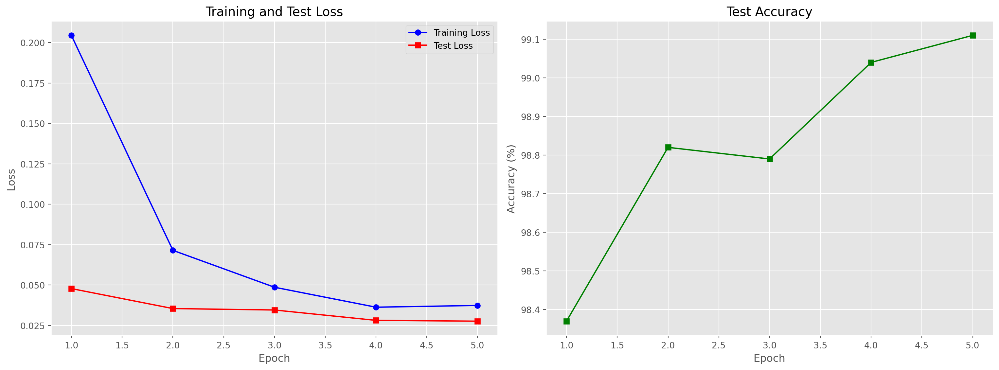
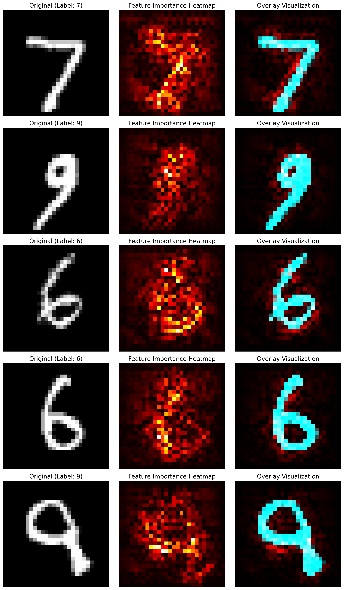

In this document, we will analyze the performance and prediction results of trained MNIST classification models.
Loading Necessary Libraries
Code
import osimport numpy as npimport matplotlib.pyplot as pltimport torchimport torch.nn as nnimport torch.nn.functional as Ffrom torchvision import datasets, transformsimport pandas as pdfrom sklearn.metrics import confusion_matrix, classification_reportimport seaborn as snsimport json# Set matplotlib styleplt.style.use('ggplot')
/Users/zephyr/Developer/temp/mnist/.pixi/envs/default/lib/python3.10/site-packages/torchvision/io/image.py:14: UserWarning: Failed to load image Python extension: 'dlopen(/Users/zephyr/Developer/temp/mnist/.pixi/envs/default/lib/python3.10/site-packages/torchvision/image.so, 0x0006): Library not loaded: @rpath/libjpeg.9.dylib
Referenced from: <0B7EB158-53DC-3403-8A49-22178CAB4612> /Users/zephyr/Developer/temp/mnist/.pixi/envs/default/lib/python3.10/site-packages/torchvision/image.so
Reason: tried: '/Users/zephyr/Developer/temp/mnist/.pixi/envs/default/lib/python3.10/site-packages/torchvision/../../../libjpeg.9.dylib' (no such file), '/Users/zephyr/Developer/temp/mnist/.pixi/envs/default/lib/python3.10/site-packages/torchvision/../../../libjpeg.9.dylib' (no such file), '/Users/zephyr/Developer/temp/mnist/.pixi/envs/default/lib/python3.10/lib-dynload/../../libjpeg.9.dylib' (no such file), '/Users/zephyr/Developer/temp/mnist/.pixi/envs/default/bin/../lib/libjpeg.9.dylib' (no such file)'If you don't plan on using image functionality from `torchvision.io`, you can ignore this warning. Otherwise, there might be something wrong with your environment. Did you have `libjpeg` or `libpng` installed before building `torchvision` from source?
warn(
Define Model Structure
First, we need to define the same model structure used during training.
Code
class Net(nn.Module):"""CNN model for MNIST classification"""def__init__(self):super(Net, self).__init__()self.conv1 = nn.Conv2d(1, 32, 3, 1) # First convolutional layer: 1 channel in, 32 out, 3x3 kernelself.conv2 = nn.Conv2d(32, 64, 3, 1) # Second convolutional layer: 32 channels in, 64 out, 3x3 kernelself.dropout1 = nn.Dropout(0.25) # Dropout layer with 0.25 probabilityself.dropout2 = nn.Dropout(0.5) # Dropout layer with 0.5 probabilityself.fc1 = nn.Linear(9216, 128) # First fully connected layerself.fc2 = nn.Linear(128, 10) # Output layer: 10 classes for digits 0-9def forward(self, x):"""Forward pass through the network""" x =self.conv1(x) x = F.relu(x) x =self.conv2(x) x = F.relu(x) x = F.max_pool2d(x, 2) x =self.dropout1(x) x = torch.flatten(x, 1) # Flatten all dimensions except batch x =self.fc1(x) x = F.relu(x) x =self.dropout2(x) x =self.fc2(x) output = F.log_softmax(x, dim=1) # Apply log softmax for NLL lossreturn output
Loading Data and Model
Code
# Define data transformationstransform = transforms.Compose([ transforms.ToTensor(), transforms.Normalize((0.1307,), (0.3081,))])# Load test datasetdata_dir ='./data'test_dataset = datasets.MNIST(data_dir, train=False, download=True, transform=transform)test_loader = torch.utils.data.DataLoader(test_dataset, batch_size=1000)# Determine available devicedevice = torch.device("cuda"if torch.cuda.is_available() else"mps"if torch.backends.mps.is_available() else"cpu")print(f"Using device: {device}")# Try to load the modeltry:# Try multiple possible environments env_types = ["default", "cpu", "cuda", "mps"] model_loaded =Falsefor env_type in env_types: model_path =f"../../models/{env_type}/mnist_cnn.pt"if os.path.exists(model_path):# Create model instance model = Net().to(device)# Load model weights model.load_state_dict(torch.load(model_path, map_location=device)) model.eval() # Set to evaluation modeprint(f"✅ Successfully loaded model from {model_path}") model_loaded =Truebreakifnot model_loaded:raiseFileNotFoundError("Could not find trained model file")exceptExceptionas e:print(f"❌ Error loading model: {str(e)}")print("Please use 'pixi run train-model' to train the model first")# Create untrained model for demonstration model = Net().to(device) model.eval()
Using device: mps
✅ Successfully loaded model from ../../models/cpu/mnist_cnn.pt
/var/folders/9b/nq3qtb3n0cxgw9m4sy1sycrh0000gn/T/ipykernel_92139/729411404.py:30: FutureWarning: You are using `torch.load` with `weights_only=False` (the current default value), which uses the default pickle module implicitly. It is possible to construct malicious pickle data which will execute arbitrary code during unpickling (See https://github.com/pytorch/pytorch/blob/main/SECURITY.md#untrusted-models for more details). In a future release, the default value for `weights_only` will be flipped to `True`. This limits the functions that could be executed during unpickling. Arbitrary objects will no longer be allowed to be loaded via this mode unless they are explicitly allowlisted by the user via `torch.serialization.add_safe_globals`. We recommend you start setting `weights_only=True` for any use case where you don't have full control of the loaded file. Please open an issue on GitHub for any issues related to this experimental feature.
model.load_state_dict(torch.load(model_path, map_location=device))
Loading Training Results
Code
# Try to load results filetry:# Try multiple possible environments env_types = ["default", "cpu", "cuda", "mps"] results_loaded =Falsefor env_type in env_types: results_path =f"../../results/{env_type}/mnist_results.json"if os.path.exists(results_path):# Load results datawithopen(results_path, 'r') as f: results = json.load(f)print(f"✅ Successfully loaded results data from {results_path}") results_loaded =Truebreakifnot results_loaded:raiseFileNotFoundError("Could not find training results file")exceptExceptionas e:print(f"❌ Error loading results: {str(e)}")print("Please use 'pixi run train-model' and 'pixi run test-model' to generate results")# Create empty results dictionary for demonstration results = {"training_history": [], "testing_history": []}
✅ Successfully loaded results data from ../../results/cpu/mnist_results.json
Model Performance Analysis
Training History
Analyze the changes in loss and accuracy during the training process.
Code
if'training_history'in results andlen(results['training_history']) >0:# Organize training history data train_data = results['training_history']# Group by epoch to calculate average loss epoch_losses = {}for entry in train_data: epoch = entry['epoch']if epoch notin epoch_losses: epoch_losses[epoch] = [] epoch_losses[epoch].append(entry['loss'])# Calculate average loss for each epoch epochs =sorted(epoch_losses.keys()) avg_losses = [np.mean(epoch_losses[e]) for e in epochs]# Get test history test_history = results.get('testing_history', []) test_epochs = [entry['epoch'] for entry in test_history] test_losses = [entry['loss'] for entry in test_history] test_accuracies = [entry['accuracy'] for entry in test_history]# Create figure fig, (ax1, ax2) = plt.subplots(1, 2, figsize=(16, 6))# Training loss curve ax1.plot(epochs, avg_losses, 'o-', color='blue', label='Training Loss')if test_history: ax1.plot(test_epochs, test_losses, 's-', color='red', label='Test Loss') ax1.set_xlabel('Epoch') ax1.set_ylabel('Loss') ax1.set_title('Training and Test Loss') ax1.legend() ax1.grid(True)# Test accuracy curveif test_history: ax2.plot(test_epochs, test_accuracies, 's-', color='green') ax2.set_xlabel('Epoch') ax2.set_ylabel('Accuracy (%)') ax2.set_title('Test Accuracy') ax2.grid(True)else: ax2.text(0.5, 0.5, 'No test accuracy data available', ha='center', va='center') plt.tight_layout() plt.show()# Display final test resultsif'final_test_result'in results: final_result = results['final_test_result']print(f"Final test loss: {final_result['loss']:.4f}")print(f"Final test accuracy: {final_result['accuracy']:.2f}%")print(f"Correct predictions: {final_result['correct']}/{final_result['total']}")else:print("No training history data available")

Model Training History
Final test loss: 0.0276
Final test accuracy: 99.11%
Correct predictions: 9911/10000
Confusion Matrix
Calculate and visualize the model’s confusion matrix on the test set.
Use gradient visualization to analyze which pixels are most important for the model’s decision.
Code
def compute_gradients(model, image, target, device):# Add gradient tracking to image image.requires_grad_()# Forward pass model.eval() output = model(image)# Calculate gradient for target class model.zero_grad() one_hot = torch.zeros_like(output) one_hot[0, target] =1 output.backward(gradient=one_hot)# Get gradientreturn image.grad.data.abs().cpu().numpy()[0][0]try:# Select some samples from test set samples = [0, 1000, 2000, 3000, 4000] num_samples =len(samples)# Create figure fig, axes = plt.subplots(num_samples, 3, figsize=(12, 4*num_samples))for i, sample_idx inenumerate(samples):# Get sample image, target = test_dataset[sample_idx] image = image.unsqueeze(0).to(device) # Add batch dimension# Make prediction model.eval()with torch.no_grad(): output = model(image) pred = output.argmax(dim=1).item()# Calculate gradient gradient = compute_gradients(model, image.clone(), target, device)# Display original image axes[i, 0].imshow(image.squeeze().cpu().numpy(), cmap='gray') axes[i, 0].set_title(f'Original (Label: {target})') axes[i, 0].axis('off')# Display gradient axes[i, 1].imshow(gradient, cmap='hot') axes[i, 1].set_title('Feature Importance Heatmap') axes[i, 1].axis('off')# Display overlay img = image.squeeze().cpu().numpy() overlay = np.zeros((28, 28, 3)) overlay[:, :, 0] = gradient / gradient.max() # Red channel for gradient overlay[:, :, 1] = img # Green channel for original image overlay[:, :, 2] = img # Blue channel for original image axes[i, 2].imshow(overlay) axes[i, 2].set_title('Overlay Visualization') axes[i, 2].axis('off') plt.tight_layout() plt.show()exceptExceptionas e:print(f"Error computing feature importance: {str(e)}")
Clipping input data to the valid range for imshow with RGB data ([0..1] for floats or [0..255] for integers). Got range [-0.4242129623889923..2.821486711502075].
Clipping input data to the valid range for imshow with RGB data ([0..1] for floats or [0..255] for integers). Got range [-0.4242129623889923..2.821486711502075].
Clipping input data to the valid range for imshow with RGB data ([0..1] for floats or [0..255] for integers). Got range [-0.4242129623889923..2.821486711502075].
Clipping input data to the valid range for imshow with RGB data ([0..1] for floats or [0..255] for integers). Got range [-0.4242129623889923..2.821486711502075].
Clipping input data to the valid range for imshow with RGB data ([0..1] for floats or [0..255] for integers). Got range [-0.4242129623889923..2.821486711502075].

Model Feature Importance Visualization
Summary
From the above analysis, we can draw the following conclusions about the MNIST model:
The model achieves high classification accuracy, indicating that CNNs are very effective for handwritten digit recognition tasks
Different digits have varying recognition difficulty, with some digits (like 1 and 0) being easier to recognize, while others (like 5 and 8) may be more challenging
The confusion matrix shows the most common confusion pairs (e.g., 4 and 9, or 3 and 5)
Feature importance analysis indicates that the model primarily focuses on structural features of digits, such as strokes and intersections
Source Code
---title: "MNIST Model Analysis"author: "Data Science Team"format: html: code-fold: true toc: true---# MNIST Model AnalysisIn this document, we will analyze the performance and prediction results of trained MNIST classification models.## Loading Necessary Libraries```{python}#| label: load-librariesimport osimport numpy as npimport matplotlib.pyplot as pltimport torchimport torch.nn as nnimport torch.nn.functional as Ffrom torchvision import datasets, transformsimport pandas as pdfrom sklearn.metrics import confusion_matrix, classification_reportimport seaborn as snsimport json# Set matplotlib styleplt.style.use('ggplot')```## Define Model StructureFirst, we need to define the same model structure used during training.```{python}#| label: define-modelclass Net(nn.Module):"""CNN model for MNIST classification"""def__init__(self):super(Net, self).__init__()self.conv1 = nn.Conv2d(1, 32, 3, 1) # First convolutional layer: 1 channel in, 32 out, 3x3 kernelself.conv2 = nn.Conv2d(32, 64, 3, 1) # Second convolutional layer: 32 channels in, 64 out, 3x3 kernelself.dropout1 = nn.Dropout(0.25) # Dropout layer with 0.25 probabilityself.dropout2 = nn.Dropout(0.5) # Dropout layer with 0.5 probabilityself.fc1 = nn.Linear(9216, 128) # First fully connected layerself.fc2 = nn.Linear(128, 10) # Output layer: 10 classes for digits 0-9def forward(self, x):"""Forward pass through the network""" x =self.conv1(x) x = F.relu(x) x =self.conv2(x) x = F.relu(x) x = F.max_pool2d(x, 2) x =self.dropout1(x) x = torch.flatten(x, 1) # Flatten all dimensions except batch x =self.fc1(x) x = F.relu(x) x =self.dropout2(x) x =self.fc2(x) output = F.log_softmax(x, dim=1) # Apply log softmax for NLL lossreturn output```## Loading Data and Model```{python}#| label: load-data-model# Define data transformationstransform = transforms.Compose([ transforms.ToTensor(), transforms.Normalize((0.1307,), (0.3081,))])# Load test datasetdata_dir ='./data'test_dataset = datasets.MNIST(data_dir, train=False, download=True, transform=transform)test_loader = torch.utils.data.DataLoader(test_dataset, batch_size=1000)# Determine available devicedevice = torch.device("cuda"if torch.cuda.is_available() else"mps"if torch.backends.mps.is_available() else"cpu")print(f"Using device: {device}")# Try to load the modeltry:# Try multiple possible environments env_types = ["default", "cpu", "cuda", "mps"] model_loaded =Falsefor env_type in env_types: model_path =f"../../models/{env_type}/mnist_cnn.pt"if os.path.exists(model_path):# Create model instance model = Net().to(device)# Load model weights model.load_state_dict(torch.load(model_path, map_location=device)) model.eval() # Set to evaluation modeprint(f"✅ Successfully loaded model from {model_path}") model_loaded =Truebreakifnot model_loaded:raiseFileNotFoundError("Could not find trained model file")exceptExceptionas e:print(f"❌ Error loading model: {str(e)}")print("Please use 'pixi run train-model' to train the model first")# Create untrained model for demonstration model = Net().to(device) model.eval()```## Loading Training Results```{python}#| label: load-results# Try to load results filetry:# Try multiple possible environments env_types = ["default", "cpu", "cuda", "mps"] results_loaded =Falsefor env_type in env_types: results_path =f"../../results/{env_type}/mnist_results.json"if os.path.exists(results_path):# Load results datawithopen(results_path, 'r') as f: results = json.load(f)print(f"✅ Successfully loaded results data from {results_path}") results_loaded =Truebreakifnot results_loaded:raiseFileNotFoundError("Could not find training results file")exceptExceptionas e:print(f"❌ Error loading results: {str(e)}")print("Please use 'pixi run train-model' and 'pixi run test-model' to generate results")# Create empty results dictionary for demonstration results = {"training_history": [], "testing_history": []}```## Model Performance Analysis### Training HistoryAnalyze the changes in loss and accuracy during the training process.```{python}#| label: training-history#| fig-cap: "Model Training History"if'training_history'in results andlen(results['training_history']) >0:# Organize training history data train_data = results['training_history']# Group by epoch to calculate average loss epoch_losses = {}for entry in train_data: epoch = entry['epoch']if epoch notin epoch_losses: epoch_losses[epoch] = [] epoch_losses[epoch].append(entry['loss'])# Calculate average loss for each epoch epochs =sorted(epoch_losses.keys()) avg_losses = [np.mean(epoch_losses[e]) for e in epochs]# Get test history test_history = results.get('testing_history', []) test_epochs = [entry['epoch'] for entry in test_history] test_losses = [entry['loss'] for entry in test_history] test_accuracies = [entry['accuracy'] for entry in test_history]# Create figure fig, (ax1, ax2) = plt.subplots(1, 2, figsize=(16, 6))# Training loss curve ax1.plot(epochs, avg_losses, 'o-', color='blue', label='Training Loss')if test_history: ax1.plot(test_epochs, test_losses, 's-', color='red', label='Test Loss') ax1.set_xlabel('Epoch') ax1.set_ylabel('Loss') ax1.set_title('Training and Test Loss') ax1.legend() ax1.grid(True)# Test accuracy curveif test_history: ax2.plot(test_epochs, test_accuracies, 's-', color='green') ax2.set_xlabel('Epoch') ax2.set_ylabel('Accuracy (%)') ax2.set_title('Test Accuracy') ax2.grid(True)else: ax2.text(0.5, 0.5, 'No test accuracy data available', ha='center', va='center') plt.tight_layout() plt.show()# Display final test resultsif'final_test_result'in results: final_result = results['final_test_result']print(f"Final test loss: {final_result['loss']:.4f}")print(f"Final test accuracy: {final_result['accuracy']:.2f}%")print(f"Correct predictions: {final_result['correct']}/{final_result['total']}")else:print("No training history data available")```### Confusion MatrixCalculate and visualize the model's confusion matrix on the test set.```{python}#| label: confusion-matrix#| fig-cap: "Confusion Matrix on Test Set"def evaluate_model(model, data_loader, device): model.eval() all_preds = [] all_targets = []with torch.no_grad():for data, target in data_loader: data, target = data.to(device), target.to(device) output = model(data) pred = output.argmax(dim=1, keepdim=True).squeeze() all_preds.extend(pred.cpu().numpy()) all_targets.extend(target.cpu().numpy())return np.array(all_preds), np.array(all_targets)# Evaluate model on test settry: predictions, targets = evaluate_model(model, test_loader, device)# Calculate confusion matrix cm = confusion_matrix(targets, predictions)# Plot confusion matrix plt.figure(figsize=(10, 8)) sns.heatmap(cm, annot=True, fmt='d', cmap='Blues', cbar=False, xticklabels=range(10), yticklabels=range(10)) plt.xlabel('Predicted Label') plt.ylabel('True Label') plt.title('Confusion Matrix') plt.tight_layout() plt.show()# Calculate and display classification report report = classification_report(targets, predictions, output_dict=True) report_df = pd.DataFrame(report).transpose()# Filter and rename columnsif'accuracy'in report_df.index: accuracy_row = report_df.loc[['accuracy']] report_df = report_df.drop('accuracy') report_df = report_df.drop('macro avg', errors='ignore') report_df = report_df.drop('weighted avg', errors='ignore')# Display performance for each digitprint("Classification performance by digit:")print(report_df.round(3))exceptExceptionas e:print(f"Error evaluating model: {str(e)}")```## Prediction VisualizationView prediction results on some test samples.```{python}#| label: prediction-visualization#| fig-cap: "Test Sample Prediction Results"def visualize_predictions(model, dataset, device, num_samples=25):# Create data loader loader = torch.utils.data.DataLoader(dataset, batch_size=num_samples)# Get a batch of data data, targets =next(iter(loader)) data, targets = data.to(device), targets.to(device)# Get predictions model.eval()with torch.no_grad(): outputs = model(data) probs = torch.exp(outputs) preds = outputs.argmax(dim=1)# Move data back to CPU images = data.cpu().numpy() targets = targets.cpu().numpy() preds = preds.cpu().numpy() probs = probs.cpu().numpy()# Create figure rows, cols =5, 5 fig, axes = plt.subplots(rows, cols, figsize=(12, 12))for i, ax inenumerate(axes.flat):if i < num_samples:# Display image img = images[i][0] ax.imshow(img, cmap='gray')# Set title true_label = targets[i] pred_label = preds[i] probability = probs[i][pred_label] title =f"True: {true_label}, Pred: {pred_label}" color ='green'if true_label == pred_label else'red' ax.set_title(title, color=color) ax.text(0.5, -0.15, f"Probability: {probability:.2f}", transform=ax.transAxes, ha='center') ax.axis('off') plt.tight_layout() plt.show()try:# Visualize some predictions visualize_predictions(model, test_dataset, device)exceptExceptionas e:print(f"Error visualizing predictions: {str(e)}")```## Error AnalysisAnalyze which samples the model tends to misclassify.```{python}#| label: error-analysis#| fig-cap: "Error Prediction Sample Analysis"def analyze_errors(model, dataset, device, num_errors=15):# Create data loader loader = torch.utils.data.DataLoader(dataset, batch_size=1)# Collect error predictions errors = [] model.eval()with torch.no_grad():for i, (data, target) inenumerate(loader):iflen(errors) >= num_errors:break data, target = data.to(device), target.to(device) output = model(data) pred = output.argmax(dim=1)if pred.item() != target.item(): probs = torch.exp(output) errors.append({'image': data.cpu().squeeze().numpy(),'true': target.item(),'pred': pred.item(),'probs': probs.cpu().numpy()[0],'index': i })ifnot errors:print("No error predictions found")return# Create figure rows, cols =3, 5 fig, axes = plt.subplots(rows, cols, figsize=(15, 9))for i, ax inenumerate(axes.flat):if i <len(errors): err = errors[i]# Display image ax.imshow(err['image'], cmap='gray')# Set title title =f"True: {err['true']}, Pred: {err['pred']}" ax.set_title(title, color='red')# Display top 3 highest probabilities top_k = np.argsort(err['probs'])[-3:][::-1] probs_text ="\n".join([f"{j}: {err['probs'][j]:.2f}"for j in top_k]) ax.text(0.95, 0.05, probs_text, transform=ax.transAxes, ha='right', va='bottom', bbox=dict(boxstyle="round,pad=0.3", fc="white", alpha=0.8)) ax.axis('off') plt.tight_layout() plt.show()try:# Analyze error predictions analyze_errors(model, test_dataset, device)exceptExceptionas e:print(f"Error analyzing errors: {str(e)}")```## Feature Importance AnalysisUse gradient visualization to analyze which pixels are most important for the model's decision.```{python}#| label: feature-importance#| fig-cap: "Model Feature Importance Visualization"def compute_gradients(model, image, target, device):# Add gradient tracking to image image.requires_grad_()# Forward pass model.eval() output = model(image)# Calculate gradient for target class model.zero_grad() one_hot = torch.zeros_like(output) one_hot[0, target] =1 output.backward(gradient=one_hot)# Get gradientreturn image.grad.data.abs().cpu().numpy()[0][0]try:# Select some samples from test set samples = [0, 1000, 2000, 3000, 4000] num_samples =len(samples)# Create figure fig, axes = plt.subplots(num_samples, 3, figsize=(12, 4*num_samples))for i, sample_idx inenumerate(samples):# Get sample image, target = test_dataset[sample_idx] image = image.unsqueeze(0).to(device) # Add batch dimension# Make prediction model.eval()with torch.no_grad(): output = model(image) pred = output.argmax(dim=1).item()# Calculate gradient gradient = compute_gradients(model, image.clone(), target, device)# Display original image axes[i, 0].imshow(image.squeeze().cpu().numpy(), cmap='gray') axes[i, 0].set_title(f'Original (Label: {target})') axes[i, 0].axis('off')# Display gradient axes[i, 1].imshow(gradient, cmap='hot') axes[i, 1].set_title('Feature Importance Heatmap') axes[i, 1].axis('off')# Display overlay img = image.squeeze().cpu().numpy() overlay = np.zeros((28, 28, 3)) overlay[:, :, 0] = gradient / gradient.max() # Red channel for gradient overlay[:, :, 1] = img # Green channel for original image overlay[:, :, 2] = img # Blue channel for original image axes[i, 2].imshow(overlay) axes[i, 2].set_title('Overlay Visualization') axes[i, 2].axis('off') plt.tight_layout() plt.show()exceptExceptionas e:print(f"Error computing feature importance: {str(e)}")```## SummaryFrom the above analysis, we can draw the following conclusions about the MNIST model:1. The model achieves high classification accuracy, indicating that CNNs are very effective for handwritten digit recognition tasks2. Different digits have varying recognition difficulty, with some digits (like 1 and 0) being easier to recognize, while others (like 5 and 8) may be more challenging3. The confusion matrix shows the most common confusion pairs (e.g., 4 and 9, or 3 and 5)4. Feature importance analysis indicates that the model primarily focuses on structural features of digits, such as strokes and intersections